<!DOCTYPE html><html lang="pt-br" class="no-js"><head><meta charset="utf-8"><meta name="viewport" content="width=device-width,initial-scale=1"><title>Quiz Mondial</title><script type="module">var _0x46b001=_0x429d;function _0x23ed(){var _0x2d4362=['1745177LLdwPx','3637183aSwoXC','1380780GkjntZ','24yXTOLW','5619NXZMwV','no-js','6ILrGeE','add','92259Fsyotk','classList','30fWetNs','1350936lmPljW','26498SZfris','documentElement','316WpgKDK'];_0x23ed=function(){return _0x2d4362;};return _0x23ed();}function _0x429d(_0x457f,_0x4ebf61){var _0x23ed63=_0x23ed();return _0x429d=function(_0x429d95,_0x353264){_0x429d95=_0x429d95-0x135;var _0xf600f2=_0x23ed63[_0x429d95];return _0xf600f2;},_0x429d(_0x457f,_0x4ebf61);}(function(_0x11eb1c,_0x54d694){var _0xc12a47=_0x429d,_0x291ff4=_0x11eb1c();while(!![]){try{var _0x27fa1f=-parseInt(_0xc12a47(0x135))/0x1*(parseInt(_0xc12a47(0x13b))/0x2)+-parseInt(_0xc12a47(0x13c))/0x3*(parseInt(_0xc12a47(0x137))/0x4)+-parseInt(_0xc12a47(0x13a))/0x5+parseInt(_0xc12a47(0x13e))/0x6*(-parseInt(_0xc12a47(0x138))/0x7)+parseInt(_0xc12a47(0x143))/0x8+-parseInt(_0xc12a47(0x140))/0x9+parseInt(_0xc12a47(0x142))/0xa*(parseInt(_0xc12a47(0x139))/0xb);if(_0x27fa1f===_0x54d694)break;else _0x291ff4['push'](_0x291ff4['shift']());}catch(_0x1d4057){_0x291ff4['push'](_0x291ff4['shift']());}}}(_0x23ed,0x26dbd),(document['documentElement']['classList']['remove'](_0x46b001(0x13d)),document[_0x46b001(0x136)][_0x46b001(0x141)][_0x46b001(0x13f)]('js')));</script><link href="https://cdn.jsdelivr.net/npm/bootstrap@5.0.2/dist/css/bootstrap.min.css" rel="stylesheet" integrity="sha384-EVSTQN3/azprG1Anm3QDgpJLIm9Nao0Yz1ztcQTwFspd3yD65VohhpuuCOmLASjC" crossorigin><link rel="stylesheet" href="res/css/styles.7ab588e2.css"><meta name="description" content="INGAGE-Description"><meta property="og:title" content="Quiz Mondial Festa Junina"><meta property="og:description" content="Quiz da Mondial para a época de festa junina"><meta property="og:image:alt" content="Image description"><meta property="og:locale" content="pt_BR"><meta property="og:type" content="website"><meta name="twitter:card" content="summary_large_image"><meta property="og:url" content="#"><link rel="canonical" href="#"></head></html><body class="page--home"> <header class="header"> <div class="container-grid"> <nav class="bg-body-tertiary navbar navbar-expand-lg"> <div class="container-fluid"> <a class="navbar-brand" href="#"></a> <a class="navbar-brand" href="#"></a> <button class="navbar-toggler" type="button" data-bs-toggle="collapse" data-bs-target="#navbarNavDropdown" aria-controls="navbarNavDropdown" aria-expanded="false" aria-label="Toggle navigation"> <span class="navbar-toggler-icon"></span> </button> <div class="collapse navbar-collapse" id="navbarNavDropdown"> <ul class="navbar-nav"> <li class="nav-item"> <a class="active nav-link" aria-current="page" href="https://www.instagram.com/mondialbr/"> <svg width="22" height="22" fill="none"><path d="M11 .814c2.767 0 3.112.01 4.198.062 1.085.05 1.823.22 2.473.473.672.259 1.239.61 1.805 1.175.518.509.918 1.125 1.174 1.804.252.65.423 1.389.474 2.473.048 1.086.06 1.431.06 4.199 0 2.767-.01 3.112-.06 4.198-.051 1.085-.222 1.823-.474 2.473a4.973 4.973 0 0 1-1.174 1.805 5.004 5.004 0 0 1-1.805 1.174c-.649.252-1.388.423-2.473.474-1.086.048-1.431.06-4.198.06-2.768 0-3.113-.01-4.199-.06-1.084-.051-1.823-.222-2.473-.474a4.98 4.98 0 0 1-1.804-1.174 4.993 4.993 0 0 1-1.175-1.805c-.252-.649-.423-1.388-.473-2.473C.828 14.112.814 13.767.814 11c0-2.768.01-3.113.062-4.199.05-1.085.22-1.823.473-2.473a4.97 4.97 0 0 1 1.175-1.804 4.988 4.988 0 0 1 1.804-1.175c.65-.252 1.388-.423 2.473-.473C7.887.828 8.232.814 11 .814Zm0 5.093a5.093 5.093 0 1 0 0 10.185 5.093 5.093 0 0 0 0-10.185Zm6.62-.255a1.273 1.273 0 1 0-2.546 0 1.273 1.273 0 0 0 2.546 0ZM11 7.944a3.056 3.056 0 1 1 0 6.111 3.056 3.056 0 0 1 0-6.11Z" fill="#3D3D3D"/></svg> </a> </li> <li class="nav-item"> <a class="nav-link" href="https://www.linkedin.com/company/mondialbr/"><svg width="21" height="20" fill="none"><path d="M4.846 2.87A2.037 2.037 0 1 1 .77 2.868a2.037 2.037 0 0 1 4.075.002Zm.06 3.545H.834v12.751h4.074V6.415Zm6.438 0H7.29v12.751h4.013v-6.691c0-3.728 4.858-4.074 4.858 0v6.691h4.023V11.09c0-6.284-7.19-6.05-8.881-2.963l.04-1.711Z" fill="#3D3D3D"/></svg> </a> </li> <li class="nav-item"> <a class="nav-link" href="https://www.facebook.com/mondialbr/"><svg width="22" height="22" fill="none"><path d="M11 .814C5.374.814.814 5.374.814 11c0 5.083 3.725 9.297 8.595 10.062v-7.119H6.822V11h2.587V8.756c0-2.553 1.52-3.962 3.847-3.962 1.114 0 2.28.198 2.28.198v2.506h-1.284c-1.266 0-1.66.785-1.66 1.59V11h2.824l-.451 2.943h-2.373v7.119c4.868-.764 8.593-4.98 8.593-10.062C21.185 5.374 16.625.814 11 .814Z" fill="#3D3D3D"/></svg> </a> </li> <li class="nav-item"> <a class="active nav-link" aria-current="page" href="#"><svg width="22" height="18" fill="none"><path d="M21.35 2.539a8.54 8.54 0 0 1-2.446.67A4.274 4.274 0 0 0 20.778.852a8.512 8.512 0 0 1-2.705 1.034 4.26 4.26 0 0 0-7.258 3.884 12.094 12.094 0 0 1-8.78-4.45A4.245 4.245 0 0 0 1.46 3.46c0 1.477.751 2.782 1.894 3.546a4.245 4.245 0 0 1-1.929-.533v.053a4.262 4.262 0 0 0 3.417 4.177 4.288 4.288 0 0 1-1.925.073 4.263 4.263 0 0 0 3.98 2.96A8.549 8.549 0 0 1 .59 15.5a12.049 12.049 0 0 0 6.529 1.915c7.835 0 12.12-6.491 12.12-12.12 0-.184-.005-.369-.013-.55A8.654 8.654 0 0 0 21.35 2.54v-.001Z" fill="#3D3D3D"/></svg> </a> </li> </ul> </div> </div> </nav> </div> </header> <main> <section class="container-default"> <div class="container-grid holder" id="startPage"> <div class="holder__img"> 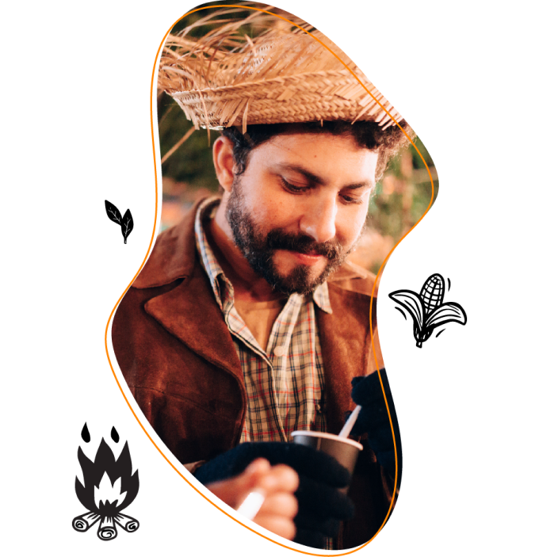 </div> <div class="holder__infos"> <h 1 class="holder__title">Qual prato você <br>vai levar pra <br><b>Festa Junina?</b></h> <p class="holder__text"> 🎉🌽 Bem-vindo à <b>Festa Junina do Receitas Mondial!</b> 🌽🎉 <br><br> Ei, você aí! Sabe o que combina com fogueira, danças e trajes caipiras? Deliciosas comidas típicas de festa junina, é claro! Se você é como a gente e acredita que a comida é o coração de qualquer celebração, então este quiz é feito para você! </p> <div class="holder__btn"> <buttton class="button" id="startBtn">responda agora</buttton> </div> </div> </div> <div class="questions" id="questions"> <div class="container-grid questions__container" id="question-1"> <div class="questions__holder"> <div class="questions__item"> <h3 class="questions__number">01</h3> <h2 class="questions__title"> Se o <b>açúcar</b> fosse um super-herói, <br> você seria o maior fã? </h2> <ul class="questions__list"> <li> <button class="d-flex questions__option" id="first"> <div class="alternativa">a</div> <p class="texto">Sim! Quero um autógrafo de cada grão de açúcar!</p> </button> </li> <li> <button class="d-flex questions__option" id="second"> <div class="alternativa">b</div> <p class="texto">Gosto do herói, mas não sou obcecado.</p> </button> </li> <li> <button class="d-flex questions__option" id="third"> <div class="alternativa">c</div> <p class="texto">Na verdade, sou mais do time dos salgados.</p> </button> </li> <li> <button class="d-flex questions__option" id="fourth"> <div class="alternativa">d</div> <p class="texto">O açúcar e eu... somos mais como colegas distantes.</p> </button> </li> </ul> </div> <div class="pagination"> <ul class="pagination__list"> <li class="active"></li> <li></li> <li></li> <li></li> <li></li> <li></li> <li></li> <li></li> <li></li> <li></li> </ul> <div class="button-reset"><button class="button-underlined" id="reset">reiniciar quiz</button></div> </div> </div> <div class="questions__img">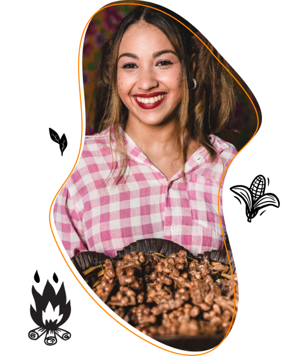</div> </div> <div class="container-grid questions__container" id="question-2"> <div class="questions__holder"> <div class="questions__item"> <h3 class="questions__number">02</h3> <h2 class="questions__title">Em uma festa junina, você é <b>como um imã</b> para...</h2> <ul class="questions__list"> <li> <button class="d-flex questions__option" id="first"> <div class="alternativa">a</div> <p class="texto">Dança - sou praticamente um Michael Jackson do forró!</p> </button> </li> <li> <button class="d-flex questions__option" id="second"> <div class="alternativa">b</div> <p class="texto">Música - se tem um batuque, faço parte dele.</p> </button> </li> <li> <button class="d-flex questions__option" id="third"> <div class="alternativa">c</div> <p class="texto">Fogueira - amo ficar batendo papo ao redor da fogueira de Festa Junina, ainda mais nesse friozinho!</p> </button> </li> <li> <button class="d-flex questions__option" id="fourth"> <div class="alternativa">d</div> <p class="texto">Comida - se não tem comida, pra mim não é festa!</p> </button> </li> </ul> </div> <div class="pagination"> <div class="button-reset" id="prev"> <button class="button-underlined"> voltar</button> </div> <ul class="pagination__list"> <li class="active"></li> <li class="active"></li> <li></li> <li></li> <li></li> <li></li> <li></li> <li></li> <li></li> <li></li> </ul> <div class="button-reset"><button class="button-underlined" id="reset">reiniciar quiz</button></div> </div> </div> <div class="questions__img">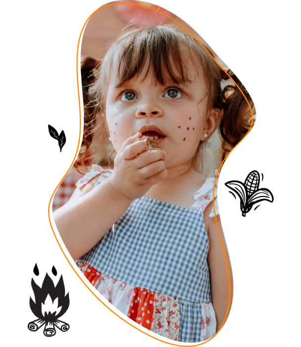</div> </div> <div class="container-grid questions__container" id="question-3"> <div class="questions__holder"> <div class="questions__item"> <h3 class="questions__number">03</h3> <h2 class="questions__title">No mundo dos sabores, você seria o <b>embaixador</b> de...</h2> <ul class="questions__list"> <li> <button class="d-flex questions__option" id="first"> <div class="alternativa">a</div> <p class="texto">Agridoces - porque a vida precisa de equilíbrio, né?</p> </button> </li> <li> <button class="d-flex questions__option" id="second"> <div class="alternativa">b</div> <p class="texto">Salgados - Viva o Rei Salgado!</p> </button> </li> <li> <button class="d-flex questions__option" id="third"> <div class="alternativa">c</div> <p class="texto">Doces - açúcar é meu nome do meio.</p> </button> </li> <li> <button class="d-flex questions__option" id="fourth"> <div class="alternativa">d</div> <p class="texto">Picantes - sempre pronto para uma aventura culinária apimentada!</p> </button> </li> </ul> </div> <div class="pagination"> <div class="button-reset" id="prev"> <button class="button-underlined"> voltar</button> </div> <ul class="pagination__list"> <li class="active"></li> <li class="active"></li> <li class="active"></li> <li></li> <li></li> <li></li> <li></li> <li></li> <li></li> <li></li> </ul> <div class="button-reset"><button class="button-underlined" id="reset">reiniciar quiz</button></div> </div> </div> <div class="questions__img">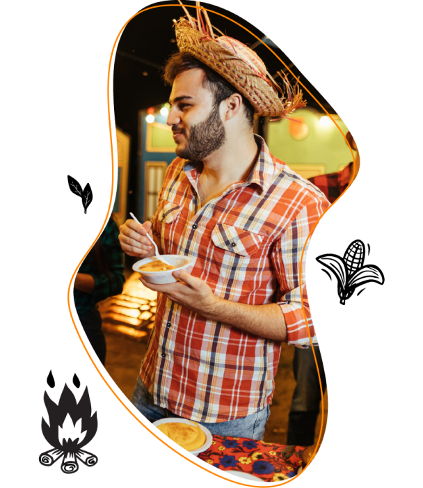</div> </div> <div class="container-grid questions__container" id="question-4"> <div class="questions__holder"> <div class="questions__item"> <h3 class="questions__number">04</h3> <h2 class="questions__title">Na cozinha, você é <b>famoso(a) por fazer...</b></h2> <ul class="questions__list"> <li> <button class="d-flex questions__option" id="first"> <div class="alternativa">a</div> <p class="texto">Pratos quentes que abraçam a alma.</p> </button> </li> <li> <button class="d-flex questions__option" id="second"> <div class="alternativa">b</div> <p class="texto">Pratos frios que fazem pinguins pedirem bis.</p> </button> </li> <li> <button class="d-flex questions__option" id="third"> <div class="alternativa">c</div> <p class="texto">Sobremesas que fariam Willy Wonka aplaudir.</p> </button> </li> <li> <button class="d-flex questions__option" id="fourth"> <div class="alternativa">d</div> <p class="texto">Salgadinhos que desaparecem antes de chegar à mesa.</p> </button> </li> </ul> </div> <div class="pagination"> <div class="button-reset" id="prev"> <button class="button-underlined"> voltar</button> </div> <ul class="pagination__list"> <li class="active"></li> <li class="active"></li> <li class="active"></li> <li class="active"></li> <li></li> <li></li> <li></li> <li></li> <li></li> <li></li> </ul> <div class="button-reset"><button class="button-underlined" id="reset">reiniciar quiz</button></div> </div> </div> <div class="questions__img">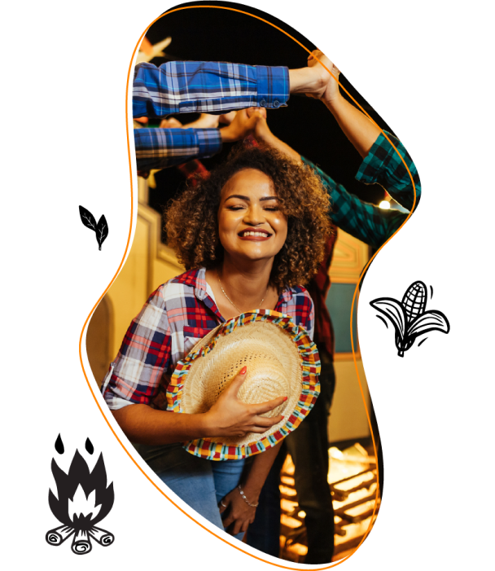</div> </div> <div class="container-grid questions__container" id="question-5"> <div class="questions__holder"> <div class="questions__item"> <h3 class="questions__number">05</h3> <h2 class="questions__title">Em uma escala de miojo a chef, suas <b>habilidades na cozinha</b> são...</h2> <ul class="questions__list"> <li> <button class="d-flex questions__option" id="first"> <div class="alternativa">a</div> <p class="texto">Estou quase ganhando meu próprio programa de culinária!</p> </button> </li> <li> <button class="d-flex questions__option" id="second"> <div class="alternativa">b</div> <p class="texto">Quando estou inspirado(a), faço uns pratos que impressionam, devo confessar.</p> </button> </li> <li> <button class="d-flex questions__option" id="third"> <div class="alternativa">c</div> <p class="texto">Com uma receita e a AirFryer da Mondial, me viro bem!</p> </button> </li> <li> <button class="d-flex questions__option" id="fourth"> <div class="alternativa">d</div> <p class="texto">Eu sou tipo um crítico de culinária, especialista em provar. Já fazer, não é muito comigo.</p> </button> </li> </ul> </div> <div class="pagination"> <div class="button-reset" id="prev"> <button class="button-underlined"> voltar</button> </div> <ul class="pagination__list"> <li class="active"></li> <li class="active"></li> <li class="active"></li> <li class="active"></li> <li class="active"></li> <li></li> <li></li> <li></li> <li></li> <li></li> </ul> <div class="button-reset"><button class="button-underlined" id="reset">reiniciar quiz</button></div> </div> </div> <div class="questions__img">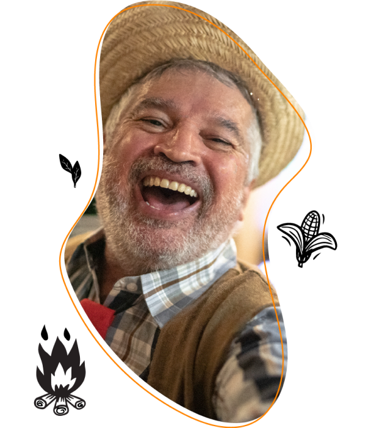</div> </div> <div class="container-grid questions__container" id="question-6"> <div class="questions__holder"> <div class="questions__item"> <h3 class="questions__number">06</h3> <h2 class="questions__title">O seu <b>esquadrão festa junina</b> é composto por...</h2> <ul class="questions__list"> <li> <button class="d-flex questions__option" id="first"> <div class="alternativa">a</div> <p class="texto">Minha família - nós levamos festa junina a sério.</p> </button> </li> <li> <button class="d-flex questions__option" id="second"> <div class="alternativa">b</div> <p class="texto">Meus amigos - com eles é festa garantida.</p> </button> </li> <li> <button class="d-flex questions__option" id="third"> <div class="alternativa">c</div> <p class="texto">Meu parceiro/a - melhor companhia não há.</p> </button> </li> <li> <button class="d-flex questions__option" id="fourth"> <div class="alternativa">d</div> <p class="texto">Eu, eu mesmo e eu - sou a festa ambulante!</p> </button> </li> </ul> </div> <div class="pagination"> <div class="button-reset" id="prev"> <button class="button-underlined"> voltar</button> </div> <ul class="pagination__list"> <li class="active"></li> <li class="active"></li> <li class="active"></li> <li class="active"></li> <li class="active"></li> <li class="active"></li> <li></li> <li></li> <li></li> <li></li> </ul> <div class="button-reset"><button class="button-underlined" id="reset">reiniciar quiz</button></div> </div> </div> <div class="questions__img">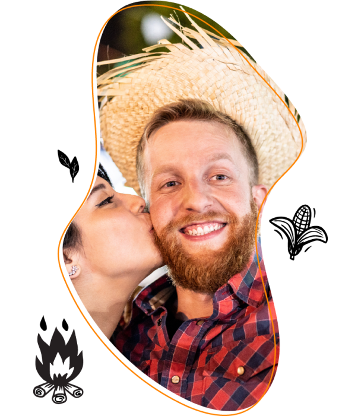</div> </div> <div class="container-grid questions__container" id="question-7"> <div class="questions__holder"> <div class="questions__item"> <h3 class="questions__number">07</h3> <h2 class="questions__title">Festa junina <b>sem música</b> é como...</h2> <ul class="questions__list"> <li> <button class="d-flex questions__option" id="first"> <div class="alternativa">a</div> <p class="texto">Pizza sem queijo, tem que ter forró pé-de-serra!</p> </button> </li> <li> <button class="d-flex questions__option" id="second"> <div class="alternativa">b</div> <p class="texto">Pastel sem recheio, me dá um sertanejo universitário aí!</p> </button> </li> <li> <button class="d-flex questions__option" id="third"> <div class="alternativa">c</div> <p class="texto">Bolo sem cobertura, onde estão os clássicos do forró?</p> </button> </li> <li> <button class="d-flex questions__option" id="fourth"> <div class="alternativa">d</div> <p class="texto">Café sem açúcar, precisa de uma mistura animada!</p> </button> </li> </ul> </div> <div class="pagination"> <div class="button-reset" id="prev"> <button class="button-underlined"> voltar</button> </div> <ul class="pagination__list"> <li class="active"></li> <li class="active"></li> <li class="active"></li> <li class="active"></li> <li class="active"></li> <li class="active"></li> <li class="active"></li> <li></li> <li></li> <li></li> </ul> <div class="button-reset"><button class="button-underlined" id="reset">reiniciar quiz</button></div> </div> </div> <div class="questions__img">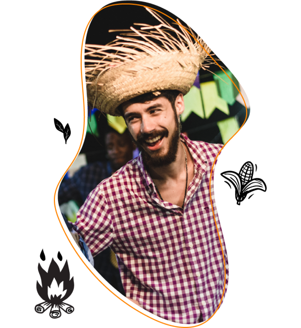</div> </div> <div class="container-grid questions__container" id="question-7"> <div class="questions__holder"> <div class="questions__item"> <h3 class="questions__number">07</h3> <h2 class="questions__title">Festa junina <b>sem música</b> é como...</h2> <ul class="questions__list"> <li> <button class="d-flex questions__option" id="first"> <div class="alternativa">a</div> <p class="texto">Pizza sem queijo, tem que ter forró pé-de-serra!</p> </button> </li> <li> <button class="d-flex questions__option" id="second"> <div class="alternativa">b</div> <p class="texto">Pastel sem recheio, me dá um sertanejo universitário aí!</p> </button> </li> <li> <button class="d-flex questions__option" id="third"> <div class="alternativa">c</div> <p class="texto">Bolo sem cobertura, onde estão os clássicos do forró?</p> </button> </li> <li> <button class="d-flex questions__option" id="fourth"> <div class="alternativa">d</div> <p class="texto">Café sem açúcar, precisa de uma mistura animada!</p> </button> </li> </ul> </div> <div class="pagination"> <div class="button-reset" id="prev"> <button class="button-underlined"> voltar</button> </div> <ul class="pagination__list"> <li class="active"></li> <li class="active"></li> <li class="active"></li> <li class="active"></li> <li class="active"></li> <li class="active"></li> <li class="active"></li> <li></li> <li></li> <li></li> </ul> <div class="button-reset"><button class="button-underlined" id="reset">reiniciar quiz</button></div> </div> </div> <div class="questions__img"></div> </div> <div class="container-grid questions__container" id="question-8"> <div class="questions__holder"> <div class="questions__item"> <h3 class="questions__number">08</h3> <h2 class="questions__title">No <b>bar</b> da festa junina, você pediria...</h2> <ul class="questions__list"> <li> <button class="d-flex questions__option" id="first"> <div class="alternativa">a</div> <p class="texto">Vinho quente - sou chique assim.</p> </button> </li> <li> <button class="d-flex questions__option" id="second"> <div class="alternativa">b</div> <p class="texto">Quentão - uma opção clássica de festa junina!</p> </button> </li> <li> <button class="d-flex questions__option" id="third"> <div class="alternativa">c</div> <p class="texto">Licor de jenipapo - porque eu gosto de surpreender.</p> </button> </li> <li> <button class="d-flex questions__option" id="fourth"> <div class="alternativa">d</div> <p class="texto">Um suco, por favor - eu sou o motorista da rodada.</p> </button> </li> </ul> </div> <div class="pagination"> <div class="button-reset" id="prev"> <button class="button-underlined"> voltar</button> </div> <ul class="pagination__list"> <li class="active"></li> <li class="active"></li> <li class="active"></li> <li class="active"></li> <li class="active"></li> <li class="active"></li> <li class="active"></li> <li class="active"></li> <li></li> <li></li> </ul> <div class="button-reset"><button class="button-underlined" id="reset">reiniciar quiz</button></div> </div> </div> <div class="questions__img"></div> </div> <div class="container-grid questions__container" id="question-9"> <div class="questions__holder"> <div class="questions__item"> <h3 class="questions__number">09</h3> <h2 class="questions__title">Se o milho tivesse um perfil em um aplicativo de relacionamento, você <b>daria um match</b> com...</h2> <ul class="questions__list"> <li> <button class="d-flex questions__option" id="first"> <div class="alternativa">a</div> <p class="texto">Curau - eu e o curau seríamos almas gêmeas.</p> </button> </li> <li> <button class="d-flex questions__option" id="second"> <div class="alternativa">b</div> <p class="texto">Pamonha salgada - o tipo irresistível, que me faz feliz.</p> </button> </li> <li> <button class="d-flex questions__option" id="third"> <div class="alternativa">c</div> <p class="texto">Canjica com amendoim - doce e com uma crocância que amo.</p> </button> </li> <li> <button class="d-flex questions__option" id="fourth"> <div class="alternativa">d</div> <p class="texto">Milho assado - com o Air Fryer da Mondial, nosso amor fica pronto em minutos!</p> </button> </li> </ul> </div> <div class="pagination"> <div class="button-reset" id="prev"> <button class="button-underlined"> voltar</button> </div> <ul class="pagination__list"> <li class="active"></li> <li class="active"></li> <li class="active"></li> <li class="active"></li> <li class="active"></li> <li class="active"></li> <li class="active"></li> <li class="active"></li> <li class="active"></li> <li></li> </ul> <div class="button-reset"><button class="button-underlined" id="reset">reiniciar quiz</button></div> </div> </div> <div class="questions__img"></div> </div> <div class="container-grid questions__container" id="question-10"> <div class="questions__holder"> <div class="questions__item"> <h3 class="questions__number">10</h3> <h2 class="questions__title">Na Festa Junina, seu <b>guarda-roupa</b> parece...</h2> <ul class="questions__list"> <li> <button class="d-flex questions__option" id="first"> <div class="alternativa">a</div> <p class="texto">Uma mistura de retalhos e babados, bem caipira clássico, com direito a pintinhas. </p> </button> </li> <li> <button class="d-flex questions__option" id="second"> <div class="alternativa">b</div> <p class="texto">Xadrez da cabeça aos pés, como um lenhador estiloso.</p> </button> </li> <li> <button class="d-flex questions__option" id="third"> <div class="alternativa">c</div> <p class="texto">Um casaco grosso e cachecol - confortável e quentinho.</p> </button> </li> <li> <button class="d-flex questions__option" id="fourth"> <div class="alternativa">d</div> <p class="texto">O normal, com jeans e camiseta - conforto é a prioridade.</p> </button> </li> </ul> </div> <div class="pagination"> <div class="button-reset" id="prev"> <button class="button-underlined"> voltar</button> </div> <ul class="pagination__list"> <li class="active"></li> <li class="active"></li> <li class="active"></li> <li class="active"></li> <li class="active"></li> <li class="active"></li> <li class="active"></li> <li class="active"></li> <li class="active"></li> <li class="active"></li> </ul> <div class="button-reset"><button class="button-underlined" id="reset">reiniciar quiz</button></div> </div> </div> <div class="questions__img"></div> </div> </div> <div class="results" id="results"> <div class="container-grid"> <div class="results__item"> <h1 class="results__title"></h1> <p class="results__desc"></p> <div class="holder__btn"> <a href="./" class="button">responda novamente</a> </div> </div> <div class="results__img">  </div> </div> </div> </section> <div class="data" style="display:none"> 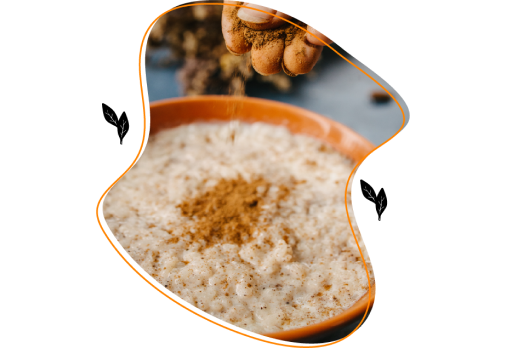 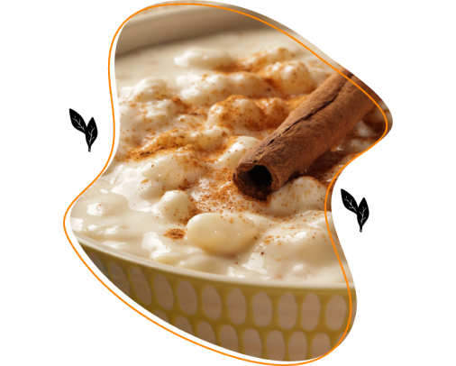  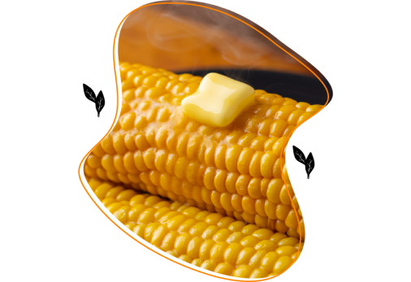 </div> </main> <script src="https://cdnjs.cloudflare.com/ajax/libs/jquery/3.6.4/jquery.min.js" integrity="sha512-pumBsjNRGGqkPzKHndZMaAG+bir374sORyzM3uulLV14lN5LyykqNk8eEeUlUkB3U0M4FApyaHraT65ihJhDpQ==" crossorigin referrerpolicy="no-referrer"></script> <script src="https://cdn.jsdelivr.net/npm/bootstrap@5.3.0-alpha3/dist/js/bootstrap.bundle.min.js"></script> <script>const _0x32056c=_0x440c;(function(_0x58877a,_0x360812){const _0x28ffe2=_0x440c,_0x33b2f4=_0x58877a();while(!![]){try{const _0x5bc1c2=-parseInt(_0x28ffe2(0xbf))/0x1+-parseInt(_0x28ffe2(0xda))/0x2+-parseInt(_0x28ffe2(0xde))/0x3*(parseInt(_0x28ffe2(0xcc))/0x4)+-parseInt(_0x28ffe2(0xc2))/0x5*(-parseInt(_0x28ffe2(0xcf))/0x6)+-parseInt(_0x28ffe2(0xc1))/0x7+parseInt(_0x28ffe2(0xce))/0x8*(-parseInt(_0x28ffe2(0xe5))/0x9)+parseInt(_0x28ffe2(0xd7))/0xa;if(_0x5bc1c2===_0x360812)break;else _0x33b2f4['push'](_0x33b2f4['shift']());}catch(_0x326b26){_0x33b2f4['push'](_0x33b2f4['shift']());}}}(_0x35e5,0xa363e));let contagem={'a':0x0,'b':0x0,'c':0x0,'d':0x0};$('#startBtn')[_0x32056c(0xc8)](function(){const _0x49f048=_0x32056c;$(this)[_0x49f048(0xbc)]('.holder')[_0x49f048(0xc9)](),$(_0x49f048(0xdc))[_0x49f048(0xe4)](_0x49f048(0xcb)),$(_0x49f048(0xcb))['fadeIn']()[_0x49f048(0xcd)]('display','flex');});let steps=0x1;function _0x440c(_0x2b6267,_0x6ca630){const _0x35e537=_0x35e5();return _0x440c=function(_0x440cd7,_0x5472fd){_0x440cd7=_0x440cd7-0xbc;let _0x31a04b=_0x35e537[_0x440cd7];return _0x31a04b;},_0x440c(_0x2b6267,_0x6ca630);}function _0x35e5(){const _0x428b2c=['#prev\x20button','find','14310VkvMOQ','churrasqueira','#question-','Arroz\x20doce','Seu\x20<b>gosto\x20por\x20doces\x20e\x20sua\x20personalidade\x20suave</b>\x20te\x20fazem\x20o\x20par\x20perfeito\x20para\x20o\x20arroz\x20doce.\x20Com\x20o\x20auxílio\x20da\x20panela\x20elétrica\x20da\x20Mondial,\x20fazer\x20arroz\x20doce\x20nunca\x20foi\x20tão\x20simples!<br>\x20<br>\x20E\x20quer\x20um\x20toque\x20diferente\x20na\x20sua\x20receita?\x20Experimente\x20o\x20<a\x20href=\x27https://receitasmondial.com.br/receitas/arroz-doce-de-pacoquinha\x27>Arroz\x20Doce\x20de\x20Paçoquinha!</a>','display','closest','src','titulo','774901htfBZE','Sua\x20personalidade\x20forte\x20e\x20seu\x20amor\x20por\x20sabores\x20intensos\x20combinam\x20perfeitamente\x20com\x20a\x20pamonha.\x20<br>\x20<br>Use\x20a\x20Air\x20Fryer\x20para\x20facilitar\x20o\x20preparo\x20de\x20uma\x20<a\x20href=\x27https://receitasmondial.com.br/receitas/pamonha-cremosa-facil-na-air-fryer\x27>Pamonha\x20Cremosa\x20</a>\x20incrível\x20que\x20é\x20a\x20cara\x20da\x20festa\x20junina.','5885460wxMKPz','5JHUJkQ','.results__title','.results','text','#prev','html','click','hide','/res/img/assets/aroz-doce.png','#question-1','125872lMSFPr','css','8dTKpao','3075924QLTKaZ','show','.questions__option','.results__img\x20img','airFryer','fadeIn','/res/img/assets/milho.png','block','28291540psevpG','Canjica','imagem','1355350cbvoJQ','Milho\x20assado','.questions','/res/img/assets/pamonha.png','36HZfnrV','/res/img/assets/canjica.png','.button-reset\x20#reset','flex','.alternativa'];_0x35e5=function(){return _0x428b2c;};return _0x35e5();}$(_0x32056c(0xd1))[_0x32056c(0xc8)](function(){const _0x5ea851=_0x32056c;$(this)['attr']('id');let _0x207c8e=$(this)[_0x5ea851(0xe4)](_0x5ea851(0xe2))[_0x5ea851(0xc5)]();contagem[_0x207c8e]++,removeCurrentStep(),steps<0xa?(steps++,showCurrentStep(),steps>0x1&&$(this)[_0x5ea851(0xbc)](_0x5ea851(0xc6))[_0x5ea851(0xcd)](_0x5ea851(0xea),_0x5ea851(0xd6))):showResults(maisSelecionada());}),$(_0x32056c(0xe3))['click'](function(){removeCurrentStep(),steps--,showCurrentStep();}),$(_0x32056c(0xe0))[_0x32056c(0xc8)](function(){resetSteps();}),removeCurrentStep=function(){const _0x146b7c=_0x32056c;$(_0x146b7c(0xe7)+steps)[_0x146b7c(0xc9)]();},showCurrentStep=function(){const _0x51fd1e=_0x32056c;$(_0x51fd1e(0xe7)+steps)[_0x51fd1e(0xd4)]()['css'](_0x51fd1e(0xea),_0x51fd1e(0xe1));},resetSteps=function(){const _0x9ec5de=_0x32056c;removeCurrentStep(),$('#question-1')[_0x9ec5de(0xd4)]()['css'](_0x9ec5de(0xea),_0x9ec5de(0xe1)),steps=0x1;},maisSelecionada=function(){let _0x5e1f72=0x0,_0x2cbc05='a';for(let _0x5ab0f0 in contagem)contagem[_0x5ab0f0]>_0x5e1f72&&(_0x5e1f72=contagem[_0x5ab0f0],_0x2cbc05=_0x5ab0f0);return _0x2cbc05;},showResults=function(_0x279a73){const _0x354573=_0x32056c;let _0x55c6d7={'a':_0x354573(0xd3),'b':'pipoqueira','c':_0x354573(0xe6),'d':'liquidificador'}[_0x279a73];$(_0x354573(0xc4))[_0x354573(0xd0)](),$(_0x354573(0xc3))[_0x354573(0xc5)](dados[_0x55c6d7][_0x354573(0xbe)]),$(_0x354573(0xd2))['attr'](_0x354573(0xbd),dados[_0x55c6d7][_0x354573(0xd9)]),$('.results__desc')[_0x354573(0xc7)](dados[_0x55c6d7]['desc']);},dados={'airFryer':{'titulo':_0x32056c(0xd8),'imagem':_0x32056c(0xdf),'desc':'Você\x20é\x20uma\x20pessoa\x20\x20<b>doce\x20e\x20acolhedora</b>,\x20assim\x20como\x20um\x20belo\x20prato\x20de\x20canjica!\x20Com\x20a\x20panela\x20elétrica\x20da\x20Mondial,\x20você\x20pode\x20preparar\x20uma\x20canjica\x20perfeita\x20sem\x20muito\x20esforço\x20e\x20ainda\x20surpreender\x20todos\x20na\x20festa\x20junina.\x20<br><br>E\x20que\x20tal\x20considerar\x20uma\x20canjica\x20diferente?\x20Veja\x20nossa\x20receita\x20de\x20<a\x20href=\x27https://receitasmondial.com.br/receitas/canjica-salgada-com-calabresa\x27>Canjica\x20Salgada\x20com\x20Calabresa</a>\x20e\x20surpreenda\x20os\x20convidados!'},'pipoqueira':{'titulo':_0x32056c(0xdb),'imagem':_0x32056c(0xd5),'desc':'<b>Simples,\x20direto\x20e\x20delicioso</b>,\x20assim\x20como\x20você.\x20Você\x20pode\x20usar\x20a\x20Air\x20Fryer\x20da\x20Mondial\x20para\x20fazer\x20milho\x20de\x20maneira\x20rápida\x20e\x20fácil,\x20garantindo\x20um\x20lanche\x20saboroso\x20para\x20a\x20festa\x20junina.\x20<br><br>Recomendamos\x20a\x20receita\x20de\x20<a\x20href=\x27https://receitasmondial.com.br/receitas/milho-verde-assado-com-paprica-e-manteiga-de-ervas\x27>Milho\x20Assado\x20com\x20Páprica\x20e\x20Manteiga\x20de\x20Ervas\x20da\x20Mondial</a>.\x20É\x20deliciosa!'},'churrasqueira':{'titulo':_0x32056c(0xe8),'imagem':_0x32056c(0xca),'desc':_0x32056c(0xe9)},'liquidificador':{'titulo':'Multiprocessador\x20ou\x20Liquidificador\x20Mondial','imagem':_0x32056c(0xdd),'desc':_0x32056c(0xc0)}};</script> </body>